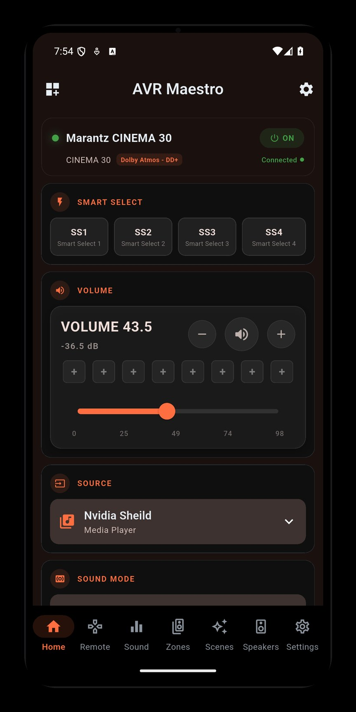

The premium controller for Denon and Marantz AV receivers - every zone, every mode, every detail, from your phone, tablet, or desktop.

Real screenshots from AVR Maestro - dashboard, scenes, sound modes, inputs, virtual remote, now playing, themes, and multi-zone. Tap any to zoom.
Deeper control than the remote in the box - and everything stays in sync with the physical remote and front panel.
Capture your entire setup - input, volume, sound mode, Audyssey/Dirac, speaker preset, channel levels, zones, even the tuner - and recall all of it with a single tap. Movie night, gaming, late-night listening: each its own Scene.
Precise volume control with dB readout, one-tap input source switching with a visual grid, and a full surround mode selector with every mode your receiver supports.
A premium virtual remote with navigation D-pad, playback transport controls, mute, and quick volume adjustment. Everything you need, without hunting for the physical remote.
Independent control for Zone 2 and Zone 3. Dedicated power, volume, input source, and quick volume presets for each zone, all from a single screen.
Full control over Audyssey MultEQ, Dynamic EQ, Dynamic Volume, LFC, and Containment Amount. Fine-tune your room correction without navigating receiver menus.
Switch between Dirac Live filter slots, configure IMAX mode with crossover settings, and adjust Auro-3D presets and processing strength, all from your phone.
Independently adjust volume for every speaker in your system, from front left/right to overhead height channels. Perfect for fine-tuning after room correction.
HDMI output settings, front-panel dimmer, 12V trigger outputs, eco mode, auto-standby timers, HDMI CEC, Bluetooth transmitter, audio restorer, and video processing mode.
Recall your favorite input/volume/mode combos with one tap. Choose Light, Dark (AMOLED), or Device theme, set a custom TJ Mode accent color, and drag to reorder, show, or hide navigation tabs to match your workflow.
Tune FM/AM by frequency or stored preset right from the app, and watch a live now-playing display with album art for HEOS sources. Reorder and rename your inputs so the grid reads the way you think.
Enter your receiver's IP address, or let the app find it on your network. No account, no sign-up.
AVR Maestro talks to your receiver directly over the local network - HTTP for commands, Telnet for live events, HEOS for now-playing.
Volume, inputs, surround, zones, calibration, tuner, and scenes - all from your phone, tablet, or desktop.
AVR Maestro is designed with a privacy-first, local-only architecture. No cloud dependency, no user account, no data collection beyond crash reporting.
All commands and status polling happen directly between your phone and your receiver over your local Wi-Fi. Nothing leaves your network.
No sign-up, no email, no MiyaraHub account needed. Open the app, enter your receiver's IP, and you're in control.
Firebase Crashlytics for bug reports only. No personal data, no usage tracking, no ads. Your receiver data never leaves your phone.
Device IP addresses and app preferences are stored locally on your device. Nothing is synced to a server.
The app sends commands to your receiver only when you ask it to - no background changes, nothing automated behind your back.
AVR Maestro is an independent, third-party application developed and published by MiyaraHub Technologies LLC. It is not created by, affiliated with, endorsed by, sponsored by, or officially connected with Denon, Marantz, Sound United, Masimo Corporation, or any of their subsidiaries or affiliates.
"Denon," "Marantz," "HEOS," "Audyssey," "MultEQ," "Dirac Live," "IMAX Enhanced," "Auro-3D," and all related product names and logos are trademarks or registered trademarks of their respective owners, used here for identification and compatibility purposes only.
Get AVR Maestro on your platform of choice - a one-time purchase, no subscription. Rated 4.9 out of 5.
{kind=link}
{kind=link}
{kind=link}
{kind=link}
{kind=link}
{kind=link}
{kind=link}
{kind=link}